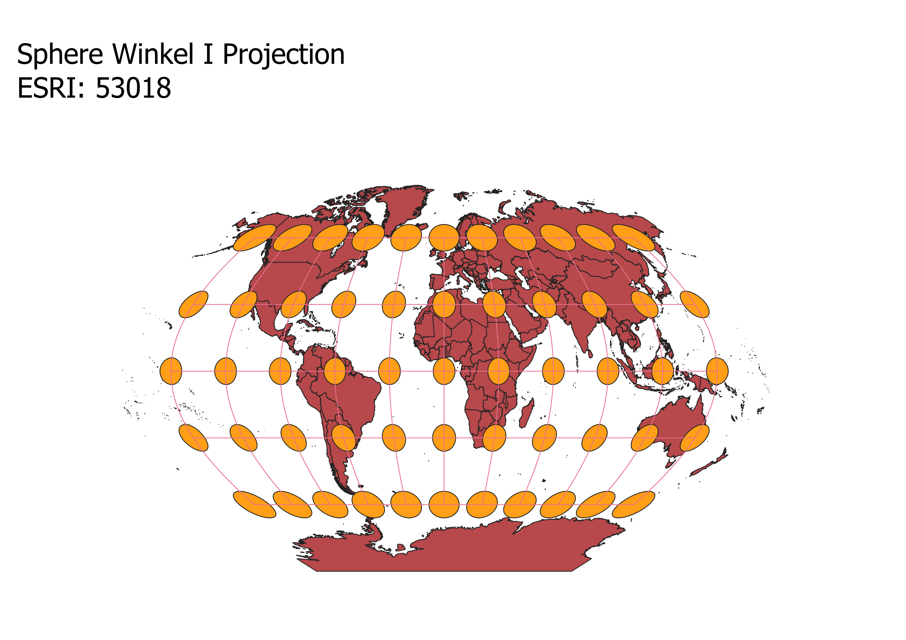
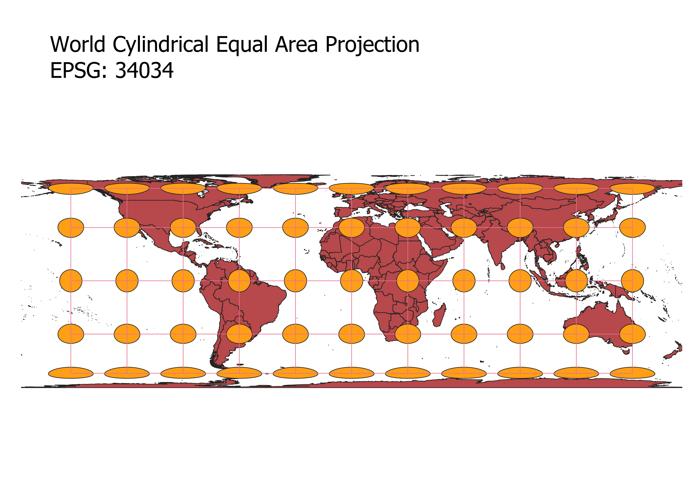
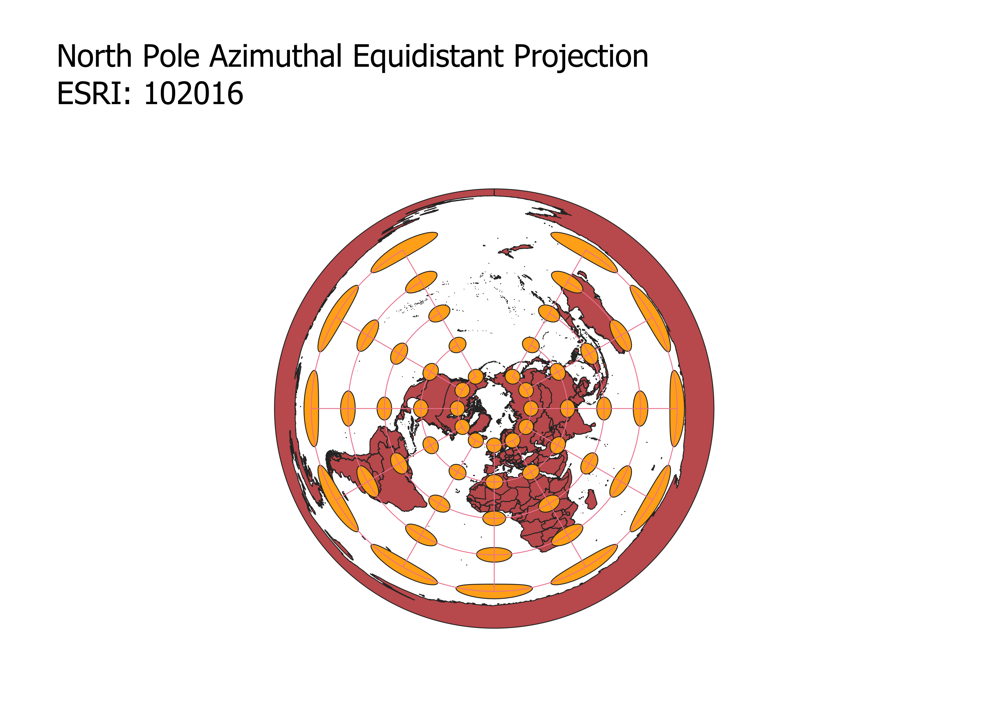
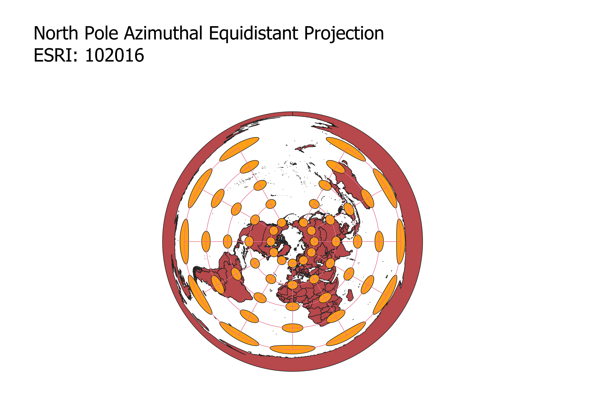

Caleb
Geog 370
Describe in your own words how you displayed the map in different projections using QGIS
In this project I learned how to display images in different projections by first downloading the data file and importing the file into QGIS.
Then I utilized the indicatrix mapper pluggin whcih provided the circles and latitude and longitude for the current projections. I change the
projection by using QGIS's project coordinate reference system. I was able to search for different ESRI and EPSG projections through their
identification codes. After I have the desired projection and the proper indicatrixs I exported the maps as pngs which I could then ustilize
in my Github website.
Projection 1
Observations
The Pseudo Mercator progjection is an important projection utilized by powerful engines such as google maps and global positional systems.
This projection maintains the proportions and shapes of the continents, however the size of them are distorted. This is especially evident
when comparing the areas near the equator and those closer to the poles.For instance Greenland appears to be larger than Africa, however in
reality this is not the case. Continents and countries along and near the equator tend to be smaller than reality and the continents and
countires farther from the equator tend to be larger than reality.

Projection 2
Observations
The Robinson Projection provides a more accurate presentation of the continents in terms of scale. However, there are slight distortions
in scale. Like the Pseudo Mercator map the areas closer to the equator are smaller than the areas farther away, except with the Robinson
Projection, this is less noticable. This map also features somewhat of a curvature.

Projection 3
Observations
The Goode Homolosine Land Projection provides ta globe-like projection. Furthermore the the scale and proportion of the
projection is practically balanced and equal. However the short coming of this map is that it is more difficult to see the costal features
of the areas closer to the poles. Looking at Greenland, you can see that it is difficult to see costal details and even the details of the
mass of lands adjacent to it. By contrast these features are seen clearly in the Pseudo Mercator map.

Projection 4
Observations
The Sphere Winkel I Projection features globe curvature, like the Goode Homolosine map, however it provides a more acurate projection of
Greenland and the northern area of canada. It also displaces relatively accurate scale. See Greenland is significantly smaller than Africa
as the case is in reality.

Projection 5
Observations
The map features no curvature, yet it does feature accurate scale and proportion in the countries and the areas near the equator. However there
is high distortion in the northern and southern polar regions.

Projections 6 and 7
Observations
The World Equidistant Conic Projection and the following projection (North Pole Azimuthal Equidistant Projection) are unique in the since that
they are flat and circular. These maps have a large area of ocean that is located in the upper center part of the map. The scale and proportions of
the land masses in these maps are essentially the same. These maps differ from each other in their projection of antartica. In the World Equidistant
Conic Projection, Antartica does not completely suround the other land masses as it does in the North Pole Azimuthal Equidistant Projection map. Another
feature of these maps is that the distortion increases as you move farther from the center of the maps.
 

EPSG: 3857, 53018, 54034, 54027, 102016, and two additional projections that you choose.
Data used for this project
Download Natrual Earth 1:10m Cultural Vector
data for purple projections come from Sakai